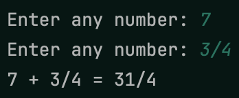
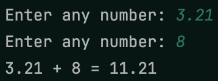
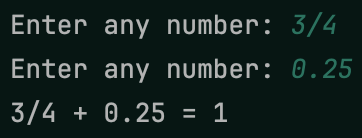

In this project, you’ll write a function that will get a number from a user. This function needs to be able to accept any kind of number, and that number needs to be accurate no matter what. The way the user enters it should determine what data type is used to represent it. Additionally, the function needs to repeatedly ask the user until they enter a valid number. Make sure to properly annotate the function to express the possible return types!
Once your function is complete, you should use it to get two numbers from the user. You should then output their sum. Since you won’t be sure what types of numbers the user entered, you should write an additional function which takes in two numbers and adds them no matter what their types are. This function should use the type of the first argument to determine the type of the sum where necessary so no accuracy is lost. For example, if the user wants to add a fraction and a decimal, the decimal should be converted to a fraction, and the sum of those two fractions should be displayed.
The following examples show different inputs and outputs.
 Example 1
 Example 2
 Example 3